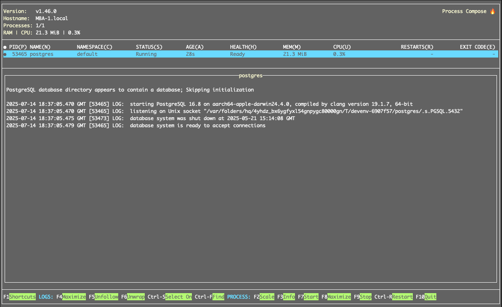

Nix: an overlay of the land of dev shells
July 2, 2025
Wanting a dev shell
Ahoy, maties--
I've been working at current job for a long time now and one area that's been important to me is helping other engineers run our software on their laptops. This was my first contribution to the company -- aside from maybe a UI button or something -- and one I've tried to shepherd along as I've worked here over the last 12 years (!!!). When I initially started, the team was split among three parts of the software and these were largely developed in isolation. I like having everything running on my laptop locally so that I can iterate quickly. I was curious if this would be possible, so I met with each different group, learned how to build each component, and put together a quick document that outlined the steps necessary to get everything running. Along the way, the eng team has tried to automate different aspects of the process, but we've never gotten to the point of a "one click" install and upgrade. Among a variety of differences along OSes, differing skill/expertise, and priorities we've never been able to fully iron out everything and keep it up to date. Enter Nix, a... what even is the right word for it? Ecosystem? for maintaining and upgrading systems.
In my personal time, I've also been working on a web app in order to help update my skillset and play with some newer ideas in local-first architecture. In that project, I didn't want to document an install guide -- I need things to work or it's too difficult to pick up and keep the momentum going for a project. There's too many things to do day-to-day outside of coding: family, hobbies, entertainment. If I only have one hour to work on something, then I probably don't want to spend it writing documentation. I want to spend my time thinking of ideas and coding them and less leaving bread crumbs along the way. Plus, documentation tends to get out of date, so that can be self-defeating in the workplace.
The side project was inspired by the Recurse Center, a writer-retreat-like program for coders, and within my cohort there were several people talking about and learning Nix. From what I understood, Nix might be a technology that would help solve these problems. My friend Shae was one of those folks and so I asked him if this is something Nix could do. We both agreed that getting something set up should be possible, but I stressed that I wanted _everything_ to be automated. By _everything_ I mean system packages, languages and tooling, and dependencies, in addition to the supporting services to the application (like database, load balancer, etc.) Most install guides I've worked with generally ask you to install the system packages and services ahead of time, but I wanted something that would be specified in code. Also whatever we came up with should ideally be transferable to prod, so that the environment that developers are using on their laptops is deployable and doesn't diverge. Shae was not convinced that this was possible, but he was happy to find out otherwise.
What is Nix?
To get started, I tried mapping a lay of the land of Nix as folks are generally quick to point out it encompasses an ecosystem of similarly minded components. A good place to get started with Nix is Determinate System's Zero to Nix. They lay out some of the big ideas and have the best installer to literally get you going. A couple other helpful guides I found were:
- NixOS: An unofficial and opinionated NixOS & Flakes book for beginners by Ryan Yin
- Nix pill series by Luca Bruno
- Nix Flakes: an Introduction by Xe Iaso
- A tour of Nix by Paul Seitz and Joachim Schiele

Trying with flakes
These were helpful resources for helping me get familiar with Nix, but I still felt a bit stuck on how exactly to get started in my case. Sometimes I find this happens with open source bazaars/ecosystems, where there's clearly an articulated philosophy and ways to achieve something, but it's challenging for a beginner to know how to connect all the pieces. For getting a development environment started with Nix, we thought Flakes felt like the right tool, but how would I actually use a Flake to get started? Luckily Shae had some folks to reach out to and they offered a couple flakes for us to try. One of those flakes from Ed Langley was pretty close to what we wanted to do.
We were able to modify and run the flake pretty easily, but we still wanted to figure out a more Nix-y solution for how to run the database. How the heck would we do that? Perhaps homemanager could do it? The approach we initially took -- based off of Ed's Flake -- was to use Nix to install Postgres and then write a Bash script that would do the initialization. This kinda worked, but was also an unsatisfying solution. The approach felt impure (a literal term in the Nix/FP world that describes a derivation where the result is not deterministic and reproducible), in an a way that didn't click with our goal. Plus it totally barfed when Shae tried it out: he already had Postgres running and the ports collided. We thought about modifying the Bash script to choose a free port, but...
devenv, it just worked
Eventually we backed up and looked around for some other solutions. Using Nix for reproducible development environments isn't exactly a novel take, so we wanted to see what others were doing to make it happen. There were several Nix "wrappers" out there, so maybe one of those could help us get started. The first we tried was devenv, but another I would like to try out is devbox. The reason I went with devenv is that it seems to integrate closer to Nix (for example with devenv the specification is still written in Nix rather than devbox using json).
Lo and behold: we tried devenv and postgres booted up nicely alongside the Haskell tooling. This worked on both Linux and Mac platforms without any tinkering on our part, which was exactly what I wanted.

Parting thoughts
Clearly I want to learn more about Nix, but I was rather satisfied with how effectively devenv seems to solve this use case. I'd like to understand it better, but one of the reasons I liked using it is that it didn't feel like it was trying to hide the Nix-iness from me. I'm hoping it'll continue to be a good way to get introduced and learn more about Nix, while still helping me solve the problems I have in this moment. Some of the next things Shae and I have talked about doing are getting a feel for how devenv feels when actually developing a system. Will it play nicely with emacs and VS Code or will the ergonomics break down? Is there anything we can do to help populate and upgrade the database as the system evolves? Can we actually deploy the environment we're using in production?
I guess it's late in the article to mention it, but I did want to bring up Docker. One of the other redeeming parts of the Nix journey was hearing that others had a negative experience with Docker. The promise of Docker had been to be able to run the same thing in prod and dev, but I've just not found that to be an efficient way to iterate. Especially since my goal has been to be able to empower developers to tinker with the whole application, not only the part their team is responsible for. Perhaps the ergonomics of Docker for development environments has changed since I tried it, but I'm happy to see alternatives have been developed.
The last parting thought I've had around this whole exploration was to give a counterpoint to my negative feelings about documentation. When things are documented and users have to go through the pain of following the guide, it's an opportunity for them to learn. Automation takes that process away, so any rough edges are really sharp since the user doesn't have any way of recovering when the automation fails. One benefit of documentation is that it helps people grow along the way, like getting hands on experience with a tool or technique they hadn't come across before.
Thanks again to Shae for helping me on the journey and encouraging me to write something. Thanks to Lily for helping with the edits. Happy hacking, Tim.